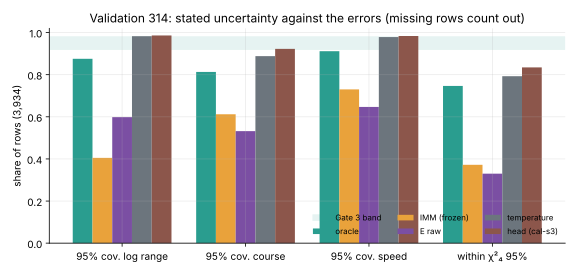
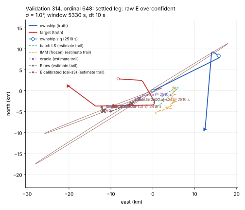
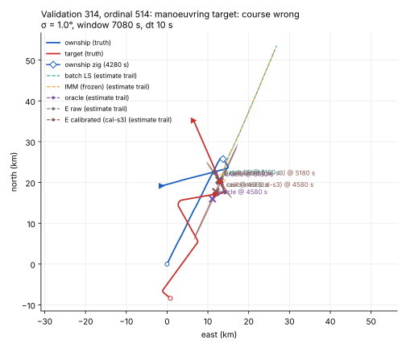
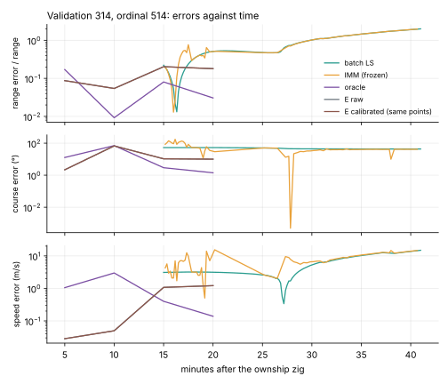

Each prediction row carries the covariance of (x, y, vx, vy) and the standard deviations of log range, course and speed
For E it is the physics solve's σ²(JᵀJ)⁻¹: it knows the bearing noise, not the segmentation's mistakes
Before calibration: everyone but the oracle is overconfident

E's 95% interval covers 0.60 of rows in log range; only a third fall within the χ²₄ 95% point. The oracle (true segmentation) is nearly calibrated.
The calibration: four scales, points untouched
A small head reads E's encoder state, the raw standard deviations and C's code
It scales the standard deviations of log range, bearing, speed and course; correlations kept; the estimate never moves
The classical control: the same four scales fitted per (time since zig × open transition)
Gate 3: 95% coverage in [0.92, 0.98] (G3-a), share within χ²₄ 95% in [0.92, 0.98] (G3-b), beat the temperature (G3-c), points unchanged (G3-d)
A settled leg: the calibrated ellipse now covers the truth

Validation seed 314, ordinal 648 (scenario 81299). Marks at zig + 5 and 15 min. The raw ellipses are too small to see; the calibrated ones are long slivers along the line of sight: covered, but wide in range.
A manoeuvring target: course is simply not known yet

Ordinal 514 (scenario 81048), marks at zig + 5 and 15 min. A target turn mid-window: E's course error reaches 67°; a Gaussian ellipse cannot state "the course is undetermined".
Errors against time, the same scenario

E (raw and calibrated share the points) against batch least squares, the frozen IMM and the oracle. E's rows are the four scored times.
The validation verdict
Check
Carried head
Band
Outcome
G3-a coverage, log range / course / speed
0.986 / 0.923 / 0.984
0.92–0.98
inconclusive
G3-b within χ²₄ 95%
0.835 [0.819, 0.849]
0.92–0.98
fail
G3-c head − temperature, interval score
+1.07 [+0.98, +1.17]
below 0
fail
G3-d points unchanged
exact
—
pass
Seed 320 not generated. Time-late E-w (sees the future): −0.0018 [−0.0082, +0.0057] gap recovered against the causal E-w, no gain.
Not achieved
An honest joint statement: the kept, near-singular correlations push 16% of rows outside χ²₄ (0.957 inside if dropped)
Course coverage is largely vacuous: on half the rows the 95% course interval is the whole circle
No learning shown: the head is nearly a constant and no better than the temperature
Training on linearised errors cannot see a course flip; the gate scores exact errors
Next (spec 009, recommended)
Report course as circular, or as undetermined, never as a Gaussian sd above 90°
Gate the stated uncertainty on observability, with a causal proxy and a "manoeuvre suspected" flag
Shrink the stated correlations; train on the exact errors the gate scores
Until then: E's points stand; its raw covariance must not be shown as an uncertainty
Write-up: blog 2026-11-08 "Gate 3" · records experiments/20261108-g3-* · figures: tma2-plot and scripts/research/g3_calibration_chart.py, sidecars next to each SVG